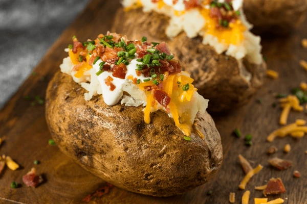

Baked Potato with Cheese

Nothing is better than a steaming hot fluffy baked potato with CHEESE!
Ingredients
- Potato
- Cheddar Cheese
- Sour Cream
- Bacon Bits
- Chives
- Butter
Steps
- Stab potato around it to provide ventilation.
- Pre-heat oven to 400 degrees.
- Gather all ingredients.
- Put potato in oven once it hits 400.
- Let bake for 10 minutes.
- Carefully cut open potato while hot.
- Put butter
- Insert Cheese, Sour cream,bacon, chives.
- Let it cool down to preferred heat.
- Enjoy!